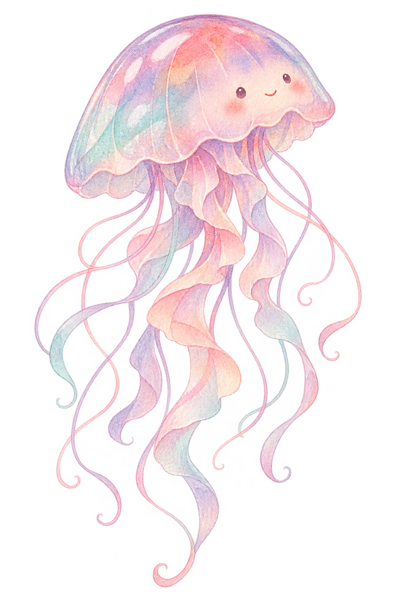

Observe. I like noticing the little things — how people navigate unfamiliar spaces, what catches their attention, and the moments when they hesitate or do something unexpected.
UI/UX Product Designer A tiny ocean of ideas
Good ideas come in waves.
Exploring thoughtful digital experiences with curiosity, care, and a little bit of magic.
Dive into my world
A note from the shore
Hi, I'm
Tina!
Curious about people. Playful with technology.
Originally from China and now based in London, I work across creative marketing, audience research and experience design. I'm curious about how people discover, understand and respond to stories across cultures and platforms.
With a background in Interactive Media and Design Informatics, I bring together content strategy, visual storytelling and emerging technology to turn audience insight into clear, engaging digital experiences.
My experience spans SEO and content operations, social and community communication, UX research, interactive prototyping, physical computing and robotic installations. I enjoy following an idea from early observation through making, testing and delivery.
To me, good creative work begins with understanding the audience: what they notice, what they care about and what helps an idea stay with them.
I combine empathy, cultural curiosity and experimentation with evidence from research and performance data. Whether I'm shaping content, a campaign or an interactive experience, I want the result to feel useful, distinctive and a little playful.
Three ways curiosity becomes design
Listen. I'm interested in the stories behind those behaviours. Understanding different perspectives often leads me to questions I wouldn't have thought to ask on my own.
Make. This is where curiosity turns into something tangible. I enjoy experimenting with interactive narratives, playful prototypes and technology that invites people to participate, make choices and discover things for themselves.
Selected explorations
Little worlds
I’ve imagined
Three real case studies and three illustrative concepts, each told as an ocean storybook. The illustrative samples make no claims of client work or completed research.
A few fathoms deeper
My underwater
world.
Where audience insight, creative storytelling and technology come together.
My underwater world is where creative marketing, audience research and design technology meet. I enjoy finding patterns in how people behave, what captures their attention and how a complex idea can become a story people want to follow.
I have worked across digital content, SEO, social and community engagement, accessibility research, visual design, interactive technology, physical computing, Arduino/C++ and digital fabrication. This range helps me move between strategy and making, collaborate across creative and technical teams, and carry an idea from insight to delivery.
I am especially drawn to work that connects cultures, makes information more approachable and gives people an active role in the experience.
Creative & Marketing
- Content Strategy & Copywriting
- Social Media & Community
- SEO & Audience Growth
- Digital Storytelling & Campaign Support
Audience & Strategy
- Audience & Cultural Research
- UX & Usability Testing
- Content Analytics & Insight Reporting
- Cross-cultural Communication
Design & Technology
- Figma & Adobe Creative Suite
- Visual Content Production
- Interactive Prototyping, Unity & AR
- Arduino, C++ & Physical Computing
- Digital Fabrication & Prototyping
- Python, SQL & AI Workflows
A pocket-sized reminder: listen before making.
Curiosity belongs in the process, not just the polish.
Send a little signal
Let’s make
a ripple.
Contact details are awaiting replacement with your own email, LinkedIn, and résumé.